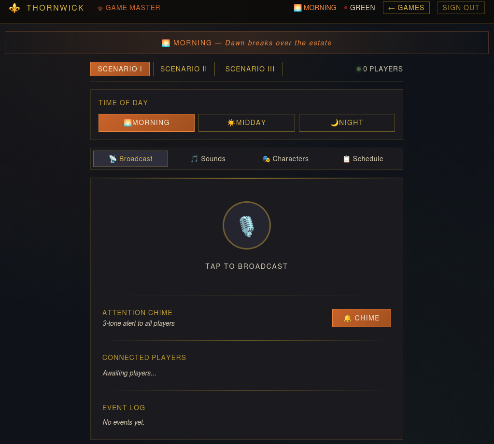
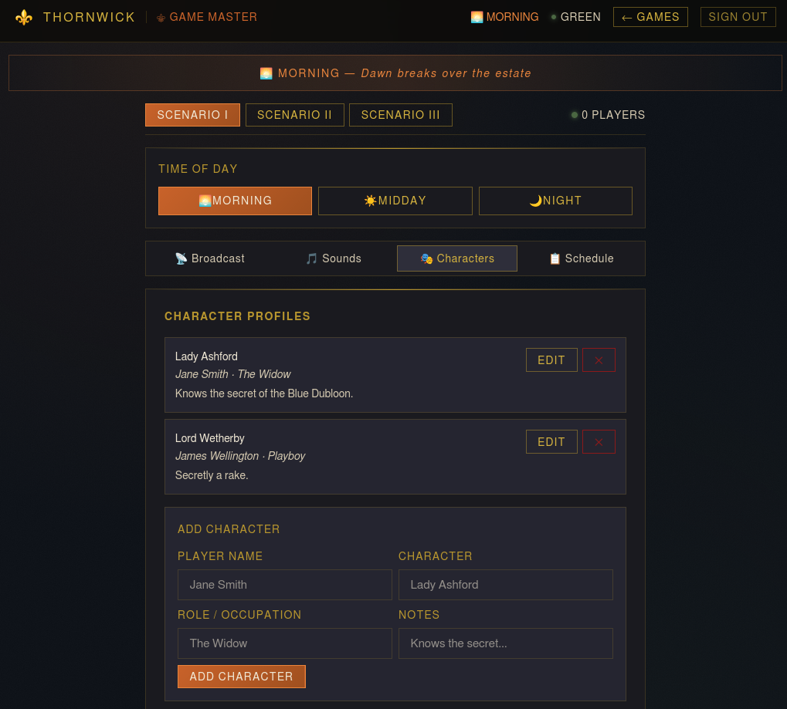

Thornwick is a real-time communication tool built specifically for murder mystery gamemasters — a web app that handles in-event audio and character management so the GM can run a complex, multi-player experience without everything falling apart mid-scene.

My cousin runs murder mystery events. Before Thornwick, there was no system — communication happened however it happened, which meant missed cues, broken immersion, and a GM trying to mentally track every player's role and status in real time.
The kind of problem that doesn't sound that hard until you're in the middle of a ten-person whodunit and someone's asking you a question you can't answer out loud without spoiling the whole thing.
Thornwick gives the GM a dedicated layer of control: real-time audio via WebRTC so players can communicate without breaking the physical scene, and a character management system so roles, identities, and assignments stay organized and visible to the right people at the right time.
The visual design leans into dark fantasy — not just for aesthetics, but because immersion is part of the product. A tool that looks like it belongs in the world makes the experience feel intentional.

I built Thornwick mostly solo, starting from a real brief: my cousin described the chaos of running these events, and I worked backwards from that to figure out what the minimum useful tool actually looked like.
The answer was simpler than I expected — not a full event management platform, just reliable audio and clear role tracking. I used Next.js for the front end and WebRTC for real-time communication, keeping the architecture lean enough to run without a complicated backend setup.
Thornwick is the kind of project that only exists because someone had a real problem worth solving. It shows how I work: start with the person, not the tech stack — figure out what's actually broken, build the smallest thing that fixes it, and make it feel good to use while you're at it.
If I were building Thornwick again, I'd add a clue and evidence delivery system — a way for the GM to push specific items, documents, or reveals to individual players at the right moment in the story. It's the obvious next layer, and it would make the tool substantially more powerful for complex events.